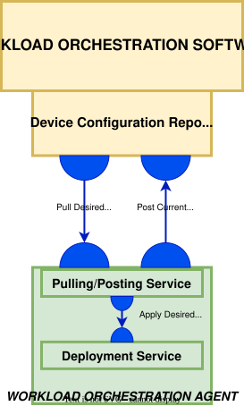
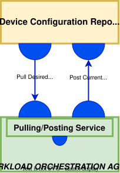

Workload Orchestration Agent
The Workload Orchestration Agent withis Margo represents a service or set of services running on the Edge Device that enables communication in various ways. It enables communication to the Workload Orchestration software to retreive a Desired state, communications with the Margo Device to apply Desired state, and lastly the ability to report to the WOS it's current status and device capability file. These communication patterns are enabled by two main components within the Agent including Pulling/Posting service and Deployment Service.
The Workload Orchestration Agent can either be pre-packaged by the Device Manufacturer at production or be installed by the Device Integrator. This agent is agnostic to the eventual Workload Orchestration software.
Margo will maintain within the standard repository reference source code, generic solution, and a test package that can be utilized by Device Owners to build their Orchestration Agent. Device Owners can produce their own agent so long as they follow the minimal requirements outlined below.
Device Owners must comply with Margo's Workload Orchestration Agent requirements. This can be completed by utilizing Margo's recommended strategies or by utilizng the provided reference implementation out of the box.
Requirements include:
- Support communication pattern that initiates from the device within the safe zone to the Workload Orchestration software.
- Support a pull method that retrieves the Desired State configuration files to be applied. Includes a configurable pulling time interval the user can configure for their use case. Extended disconnection periods must be supported.
- Support a posting method that posts the Current State to the Workload Orchestration Software to ensure it reflects the running state to the user.
- Enrollment functionality shall occur on the Margo Compliant device with a minimal requirement of configuring a trusted relationship between the Workload Orchestration Software and the Agent.
- The agent must reference industry security standards for port assignments.
- Communications between the Orchestration Agent and Software must follow secure industry standards.
- It is suggested that the agent shall minimize it's footprint on the Margo compliant device to enable support for wider range of devices.
- Containerized Workload Orchestration Agents are prefered and enable easier orchestration, however, are not required.
Below is a high-level drawing detailing the communication patterns supported via the Agent.

Workload Orchestration Agent Enrollment
Enrollment Process
In order for the Workload Orchestration Software to manage an Agent, it must first be enrolled. Within Margo, this process is called the Enrollment Process.
Enrollment process includes:
- Context and Trust establishment between WOA and the WOS
- Device Capability information transfer from Device to Orchestration Software
Enrollment Strategies
Option 1: Manual configuration of the WOA This option describes the steps an End-User will need to accomplish to enroll an Margo Compliant Device manually to the WOS.
- Retreive Unique Device Identifier
- This is required to be generated to uniquely identify the Edge Device's WOA.
- Configure security components to gain access to the Repository
Investigation Needed: Further Investigation needed on this strategy.
Option 2: Automatically configured during the device's onboarding to the Device Orchestration Software
- This configures the Workload Orchestration Agent to the tenant's corresponding Workload Orchestration Software via information provided in the Device Orchestration software.
- Note: The Device Orchestration Software is not included within MVS1. Enrollment process to be completed by End User.
Device Capabilitiy Reporting
Following the establishment of trust between the WOA and the WOS, the WOA shall post the Margo Device Capabilities file for usage within the orchestrator.
Shall follow the standard format for defining resources at the edge. See Device Capability Discovery section for more details.
Workload Orchestration Software and Agent Communication Patterns
Application & Configuration Repository Traffic
Desired State Configuration Retrieval
Margo uses a GitOps style approach to manage a node’s applications and associated configuration changes. For each device the Workload Orchestration Software maintains a source code/file-based repository under its control. This code repository shall contain all Desired State changes associated with the particular Device including application lifecycle actions and any associated configurations. The Workload Orchestration Agent is responsible for monitoring this code repository for any changes and applying the Desired State configurations. Additionally, the repository shall be utilized as a location for the WOA to update the WOS of it's Current State. This allows for verification of configuration changes by the Workload Orchestration Software.
Investigation Needed: Further Investigation needed on this strategy. API vs. OpenGitops Patterns being discussed.
Workload Orchestration Agent may enable a local caching of the Application Artifacts(manifest/marketplace data/binaries) to enable disconnected states, decrease network traffic, and other benefits.
It is expected the connection between the Workload Orchestration Agent and the Node Configuration Repository is secured using standard secure connectivity best practices. Some standard practices include the following:
- Basic authentication via HTTPS
- Bearer token authentication
- TLS cert certifications
The following shall be configurable to ensure compliance with local operations.
- Polling Interval Period - Describes a configurable time period when the Polling is allowed.
- Polling Interval Rate - Describes the rate at which the Agent shall poll the repository for a new Desired State.
- Note: This functionality is expected to be inforced via the Policy Mechanism. See section for further details.

Desired State File Format
Investigation Needed: Further Investigation needed on this strategy.
Current State Reporting
The Workload Orchestration Agent shall update the WOS with the Current State of the Edge Device. This method shall follow the oppposite approach as the Desired State Pulling. The WOA shall post the Current State to the WOS at a user selected interval. This allows the WOS to reconcile the Desired State with the Current State along with updating the user with the GUI.
Current State File Format
Investigation Needed: Further Investigation needed on this topic.
Workload Orchestration Agent and Device Communication Patterns
The Workload Orchestration Agent will require communication with the Margo Device to apply Desired State configuration files and retrieve Current State information.
Applying Desired State Configuration To apply configurations recevied from the WOS, the WOA requires a Deployment Service to first interpret the Desired State configuration and then apply to the local container runtime.
- Local Approvals shall be supported in this interaction pattern. This ensures the local site is fully responsible for when the Desired State is applied.
- Note: This functionality is expected to be inforced via the Policy Mechanism. See section for further details.
- Roll backs shall be supported to ensure the operations are not impacted.

Artifact Pulling methods This interaction pattern defines the mechanism needed to pull additional files down that are associated with the Desired State.
The Desired state configuration file shall include the meta data required to access the Artifact repository. It is up to the Deployment Service to access the artifact repositories whether local or remote.